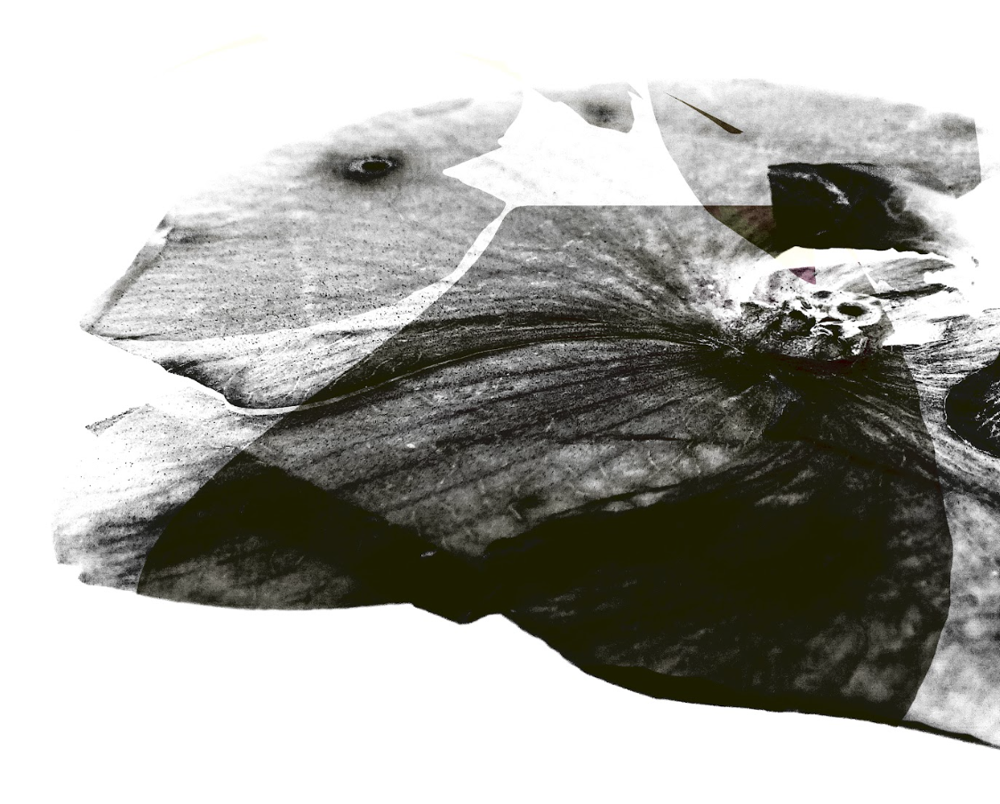

Reverberar
En una sociedad dominada por la inmediatez y el consumo, los elementos cotidianos suelen pasar desapercibidos. Acciones y objetos simples, aunque esenciales, pierden valor por su repetición o familiaridad. El impulso constante por lo nuevo lleva a ignorar aquello que ya forma parte de nuestra vida, aunque haya tenido significado en algún momento.
Este proyecto propone recuperar la atención hacia esos detalles olvidados, resaltando su valor simbólico a través de la imagen y el texto. Mediante la recolección y recontextualización de fotografías de archivo, todas propias, se construyen una serie de piezas que funcionan como una pausa visual, como una invitación a mirar de nuevo.
